Hi guys,
Recently many of us (see forum thread) have been thinking that a Raspberry Pi with an emon shield would make a nice single unit energy monitoring solution primarily aimed at domestic users.
I've made a start at drafting out a prototype, the main features so far are:
- ATmega328 based with ability to upload sketches direct from the pi - gives flexibility to add additional functionality such as DS18B20 sensors and RFM12B / RFM69CW easily. Was a difficult decision as to if we should go for an external ADC like Lightning's Pi board but I've chosen to keep it simple since the 10-bit ADC on the 328 is good enough for most applications. Using the ATmega328 will enabled the continued use of emonLib in it's current form and will be compatible with JeeLib as it adds support for the new RFM69CW.
- Power socket for 5V USB to enable external 2.5 inch HDD to be used with the Pi without the need for a hub using a USB to SATA Y cable and a single 1.2A 5V USB power supply plugged into the mini-B usb port to power both the Pi and the HDD
- Push button to initiate a Pi shutdown ($ sudo halt), useful to be able to easily shut down the Pi to ensure file system does not corrupt when removing power
- Two CT channels with AC-AC voltage sample, unfortunately it's not possible to power the whole Pi from the AC adapter. The design decision to go with two channel was primarily forced by space on the board. We also thought that if 3-phase was required the emonTx V3 would be a better choice, or even better a unit with three AC voltage inputs to enable proper 3-phase monitoring...
We would like to get a case made to house the RaspberryPi + emonPi + 2,5 inch HDD. This is the reason all I/O ports are only on the left of right edge of the board to enable them to be accessed from the case. We plan to work with Lincoln Binns who make our emonTx V3 case, we expect the Pi case to look something like this
Here is my progress so far, it's only partially routed to allow for any design changes.
{kind=link}
I would love to hear if you've got any ideas for additions / improvements etc?
Re: emonPi Development Ideas
Looks good.
I'm guessing any USB Wifi dongle sits outside the case?
Not sure how you would access the shutdown button if in a case. If its a pinhole reset-type, wold this work given the location of electricity meters?
Would be good if any case design would also be suitable for Pi + RFM12Pi + 2.5 inch hard disk
Re: emonPi Development Ideas
How do you want to connect an LCD? think about a way to easy connect and disconnect it by an I2C connection from the AT328 mega pins or direct on the GPIO I2C connectors. maybe use an CPU fan connector like this for it?
Re: emonPi Development Ideas
Hi,
you might have overlooked this thread... but i have completely finished hardware development (allthough a bit different approach) and currently testing my V2 prototype... see thread:
http://openenergymonitor.org/emon/node/3877
for the sake of completeness I've added my current version of the emon library as well as the ino code I'm using for 3 phase current measurement, this is the only function I've tested/implemented so far but everything else is is either the same as on the other emonTX devices or just needs minor adoptions!
Lightning
Re: emonPi Development Ideas
Thanks for feedback everyone.
@ukmoose
yes the wifi dongle would sit outside the case plugged into the Pi's USB port. There are some pretty slim wifi adapters avaialble. I've not much experience using wifi with the Raspberry Pi, I've heard a lot of people complain about stability issues, guess we will need to research a good adapter with solid drivers.
Good point regarding the reset switch. It will be hard to access when the Pi is in a case. Maybe a better option would be to use the same 90 degree push switch that we use on the emonTx V3 and emonGLCD and mount this on the side of the board so it could easily be reset with a paper clip.
It's would be difficult to house the Pi + RFM12Pi + HDD in a case since a USB hub is required to power the HDD this makes casing tricky. We're looking to negate the need for a hub by adding a USB socket to power the HDD onto the emonPi board. Maybe the answer to this is to make a version of the RFM12Pi with a usb socket and power socket to power a HDD
@alco
Good point regarding and LCD, I had not given any thought to that. Given the location of a Pi emonPi (next to the utility meter) it's often not the easiest place to view an LCD, however I'm sure there will be many users who have their utility meters in easy to view locations. It's probably best to connect the LCD direct to the Pi rather than the 328. This will give us more control over the LCD. I will breakout the Pi's I2C to a connector on the emonPi
@Lightning
I've not overlooked your thread! I've been enjoying watching your developments. For the reasons I mentioned in my post above we have decided to go for an ATmega328 solution. Obviously this has trade off of a lower spec ADC. I think there is worth in the two solutions, different users might choose either solution depending on their requirements. We would even be happy to consider selling your Pi board through the OpenEnergyMonitor shop in the future if this is what you would like.
Thanks again everyone for feedback. It's been really great to chat through these issues.
Re: emonPi Development Ideas
I thought I would join the party, more bring a plate than bring a bottle :-)
I too have been developing and prototyping a Raspberry Pi plate/shield although I've taken an altogrther different approach. I have working prototypes, currently on vero board more of a proof of concept than prototypes I guess, more on this very soon.
@ Glyn - Good all round features and capabilities I like the on-board hdd power supply and the OOK transceiver is a great idea (something else I'm going to tackle but not on the same board). although I'm not so sure about the usefulness of the on-board temp sensor being close to Pi's CPU/GPU in a confined case though, I am assuming the board fits component side up (opposite to Lightnings) is that right? Is the input circuitry the same as emonTx v3 or revised ?
@ Lightning I have been following your developments also, it looks very impressive and the specs are good too.
I shall have to knuckle down and post some details of my version sooner rather than later to add fuel to the discussion, I will start a thread very soon and add some links.
Regards Paul
Re: emonPi Development Ideas
Hi Glyn.
I see a slot on the schematics to fit a RF transceiver. Does this mean it would be both a node and a base for (optional) other nodes ?
Re: emonPi Development Ideas
@pb66
Good point regarding the on-board sensor. I agree, the reading will be useless given the heat from the Pi. I will go with just having go with the terminal block to give the option to easily connect an external temperature sensor.
The emonPi has the same energy monitoring circuitry as the emonTx Shield V2. The emonPi does not share the AC-DC power supply circuitry as the emonTx V3. Sadly, it's not possible to power the Pi from any sensibly sized AC adapter while also sampling the waveform.
Yes the sockets are mounted ontop of the board rather than Lightnings design of putting them on the underside. I did look at putting them on the underside but it's tricky given the other components on the Pi. Mounting the sockets on the bottom only makes sense if all sockets can be mounted beneath to give a low profile. We will have to make do with a higher board profile.
@Jerome
Yes, the pan is for the emonPi would operate as a base station. The option to add an RFM12B / RFM69CW transceiver gives the emonPi the ability to receive data from other nodes such as emonTH temperature nodes etc and send data to control nodes.
The inclusion of an OKK transmitter will give the emonPi the ability to send out OOK signals to control remote RF plugs. I know this is possible with the RFM12B but the SPI delay makes it tricky to do well. Also it's not possible as yet to use the RFM69CW in OOK mode. OOK transmitters are so cheap it makes more sense just use one rather than mess about trying to combat SPI and processor delays etc.
In terms of manufacture and retail packages my plan at the moment is to get the emonPi SMT only manufactured to keep costs down. We would sell the board with all the thru-hole components to be soldered by the user. However if there was demand I could look look at getting the board fully populated at higher cost. What do you think?
The RF modules would be optional extras as they are not essential for standard operation.
Re: emonPi Development Ideas
Firstly, I am in no way an electronics person! However, purely from the aspect of what I want to do with such a board I have a couple of thoughts that I am happy to have shot down in flames :)
As I understand it, not all the GPIO pins will be used. Should these pins then be pushed through (stacked?) so they can be used for other things?
Should the RFM board be added in the same way it currently is (via the gpio pins) to allow simple upgrade both to add the functionality and potential upgrade from the 12B to 69CW? Less compact I know but more flexible. If not, you are stuck with your original choice.
Driving 240V relays is a growing area of interest. Build in being able to do / add this easily.
Reasons; I want to be able to control a heating system. I use the pi for other monitoring (weather station) so don't really want to limit what the pi can do.
Other than that I like the ideas. Would it still be possible to add a powered hub to this setup if so required?
YMMV
Re: emonPi Development Ideas
Hi Glyn,
Quite apart from the technical aspect of this solution, I am under the impression that it would provide a very cheap solution to monitor energy in a small housing. Am I right regarding the cost ?
Currently, I am working on the problem of fuel poverty in social housings. Today, the monitoring costs are still to high to deploy a reliable monitoring system in a large number of housings. The other main problem is that many housings are not connected to internet. According to me, RFM12B seems not to be as good as Wifi (in term of distance, wall effect, reliability, ...). So an EmonRPI with a Wifi connection will be killer monitoring application regarding the fuel poverty in social housings.
Regards,
Eric
Re: emonPi Development Ideas
Eric_AMANN - I have found the RFM69CW (the ones in the RFM12B footprint) to have about twice the range of the RFM12B does to the increased power. I am just starting to test the RFM69HCW (the high power version) and hope to maybe see 2-3 times the range.
Re: emonPi Development Ideas
@borpin123
Good idea regarding stacking GPIO header pins, we will include 'stackable' GPIO headers as an option http://www.adafruit.com/products/1112
It was would not really be possible to have the RFM12B/69 added onto the GPIO's since the radio needs to connect the the AVR MCU ISP connections, these are not broken out on the GPIO. Having two AVR MCU's would be a bit sill and would cause clashes
Yup, good idea regarding driving relays, we don't intend to re-invent the wheel, Ciseco do a nice RasPi realay baard which could be used in conjunction with the emonPi board with the stackable headers mentioned above. We will keep GPIO 18 and 22 free which the Slice of Relay board uses by default: http://shop.ciseco.co.uk/slice-of-relay/
Yes a powered hub could be used not problem
@Eric
Yes, the emonPi will be lower cost solution than what we have currently (emonTx V3 + RasPi + RFM12Pi). We work with some community groups locally (Manchester Carbon Coop) and the emonPi is being developed with low cost and those sort of projects in mind. We want to help community energy projects as much as possible, these sorts of projects can really make a big difference to energy consumption and understanding.
I'm expecting most people to want to use the emonPi with WIFI since Ethernet is not usually available close the the utility meter. We need to fine a stable and rock-solid wifi solution (adapter + software). Does anyone have recommendations.
Re: emonPi Development Ideas
From everything I have read, wifi is a real pain on the pi and breaks for no good reason. How about Ethernet over mains (powerline)?
Re: emonPi Development Ideas
I'm happy with mine: http://openenergymonitor.org/emon/node/2941
Re: emonPi Development Ideas
Yep, got the same one as Jérôme and haven't had any problems for months.
I have disabled the power save in wifi dongle
Re: emonPi Development Ideas
ukmoose - brilliant! I was having no end of problems with the Edimax dongle, and that seems to have fixed it. The big symptom was every time I went back to an SSH session, it took ~10s to respond. I didn't see that anywhere.
I have found the range of the Edimax dongle is quite limited though. I have been using a TP-Link TL-WN722N which is much better, but physically huge.
Re: emonPi Development Ideas
Thanks everyone for lots good feedback on this thread. Over the past few days I’ve been making some progress on the emonPi board.
I’ve had a bit of a re-think with regard to dimensions and physical construction. The idea is to make the emonPi board the same size as a 2.5” HDD (increasing the PCB size will not add too much to the cost) and use the mounting holes on the HDD with stand-offs to hold the whole HDD-Pi-sandwich together. The emonPi shield could be used without the HDD using the Pi’s mounting holes + stand-off to keep the emonPi sturdy. The extra space will allow us to mount the CT sockets, USB socket and AC barrel socket on the rear of the board to keep the profile as slim as possible. See photos below for mockup.
The Pi will be positioned so the USB’s + Ethernet on the Pi are accessible on the edge of the board so when the unit is enclosed in an enclosure (we are working with Lincoln Binns to make this happen) the Pi’s USB + Ethernet will be accessible. The Pi’s micro-USB will not be accessible from outside the case, instead power will be provided to the board through the mini-USB on the emonPi. This power supply will also provide power to the HDD via a USB-Y-cable. Access to the HDMI port will probably be not possible when the emonPi is housed in an enclosure, I don’t think this is too much of an issue since headless running will probably be desirable for most since the unit will have to be located next to the utility meter which is not the best place for a HDMI display! If the HDMI port needs to be used the unit could just be used unenclosed.
See my first post for reasons why using the emonPi with a HDD is desirable. The emonPi will do away with the need to use a powered USB hub to enable a HDD to be used with the pi, this will significantly reduce the cost of using a HDD on the Pi and associated bulk of a hub. Second hand low capacity 2.5” (sata is preferred due to availability of tidy sata-usb y-cables) HDD’s are available quite cheaply. Running the Pi’s FS on a HDD opens up lots of home server possibilities such as file sharing and printer server etc which could be useful.
Other changes from my last post include:
What do you think of the proposed design?
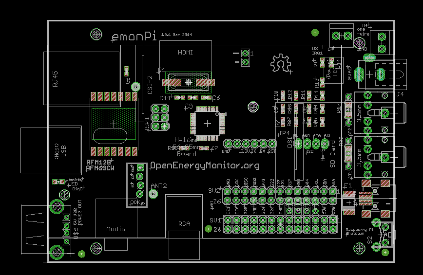
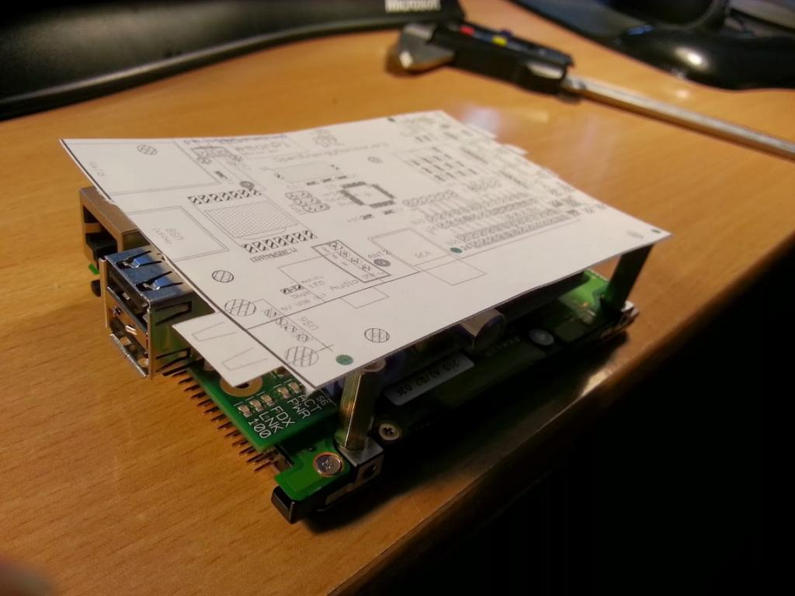
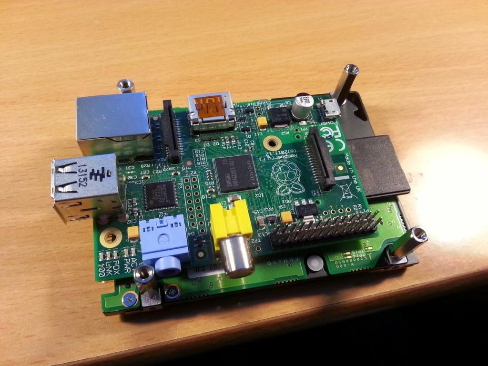
Re: emonPi Development Ideas
Looking very interesting - beats being rammed into a Tupperware with a few holes in it per my Pi!
Is there any chance of there being a heat issue with the RPi and a HDD being sandwiched together in the one box? Also might there be a vibration issue depending how firmly the board is plugged into the RPis GPIO socket?
I have found that some GPIO addons for the RPi have quite a lot of play in them unless they are well supported once hanging off the GPIO pins - your stand offs should solve that one.
If you were thinking of using an aluminum case like for the emonTX you might be able to bolt the HDD to that and use it as a large heat sink. Of course that then bring a possible wifi issue unless the dongle sits outside the enclosure.
Gary P
Re: emonPi Development Ideas
Yes that's the plan the house the whole setup in a custom case from Lincoln binns similar to their current Pi case (http://www.lincolnbinns.com/custom-raspberry-pi-aluminium-case/) but a bit bigger . It's fully aluminium so should act like a big heat sink. 2.5 inch hdd don't get particularly hot
Re: emonPi Development Ideas
Here's a photo of the Lincoln Binns case I mentioned in my posts above. We will need to make it slightly taller and wider to fit the hard drive.
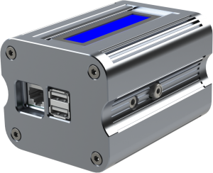
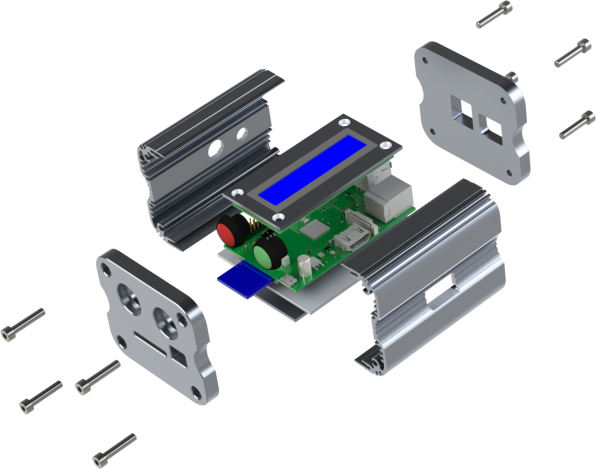
Re: emonPi Development Ideas
Would there be a way to fix it somewhere ? Like on a wall.
I don't see anything on the pics.
My Pi is in the garage. I tied it to a shelf thanks to holes in its plastic box.
Two dedicated holes would be nice, to either screw through or pass a small rope.
Or maybe this could be an additional/custom part caught together with the box's screws (the screws that we see on the pics).
Re: emonPi Development Ideas
Yup we've thought of that, Lincoln Binns have some clip on wall-mount brackets which will do the job, the clip will attach onto the side of the case.
Updated after Linclon Binns poste below
http://www.lincolnbinns.com/uniobox-lug/
Re: emonPi Development Ideas
hi Glyn,
2 comments:
Re: emonPi Development Ideas
Hi Glyn,
In the case of the Uniobox 66 which is what we use as our Pi Case, the mounting lugs are slightly different to the ones as shown above. They can be found on this page instead. http://bit.ly/1cBmUBW
We are really looking forward to seeing this project take off so all the best!
Of course, if we can help out any further, please feel free to contact us at any point.
The Lincoln Binns Team
Re: emonPi Development Ideas
Looks great.
How does the HDD interface attach? Internal ribbon cable or an external cable?
Couple of thoughts;
1. How is the IO port for temperature sensors made available?
2. How is the stack/breakout made available? If using a slice of Pi is the assumption that the case is not used? Could it be possible to breakout via a cable instead?
3. Would it make more sense to have the HDMI available rather than the video/audio?
Generally, I wonder if there is a market for a case/setup that simply combines a Pi with a HDD - could provide a revenue stream. Case could have a backplate to fit the mounting points on a monitor or a backplate that the clip mounts to attach to. Just a thought.
Re: emonPi Development Ideas
@alco it is possible to power the Raspi from the GPIO without having the do any hardware modifications to the Pi, I've tested this. You are correct the poly fuse on the Pi will be bypassed, this is why there is a poly fuse on the emonPi. I don't believe the polyfuse on the Pi would protect it against high voltage, the polyfuse protects the power supply from over current. The Raspberry Pi has got a TSV diode to protect against voltage spikes (D17), this is not bypassed and will still protect the Pi when powered from the GPIO's
- Yes we will include a hole for the antenna. I'm also thinking to include a mini SMA SMT PCB connector to give option to mount SMA antenna connection on the side of the case,
@lincolnbinns Ah right, thanks for the correction! Yup, looks like those wall mount lugs for the Unibox will do the job fine
@borpin123
1.The HDD will attach via USB y-cable, unfortunately the cable will have to patch externally to the enclosure since there is no way to access the Pi's USB other than through the external USB port (i.e no access to USB from GPIO)
2. What do you mean by 'stack/breakout'?
3. Agree, however I think given the casing constraints I don't think any of the side ports will be accessible, I'll have a think about this one. However I don't think it's too much of an issue since if HDMI was required the unit could be used un-cased or in a different case. If it is possible side milling the case to access the HDMI will come at increased cost, I'm not sure if this would be worth it since most users will probably be running it in headless mode given it's location
What do people think about a little LCD panel? This could display current KWh elapsed and report the WIFI status etc. Would 16 * 9 be large enough or might it be worth going for 20 *4? This might require a slightly larger case
Re: emonPi Development Ideas
HDD cable - 2 USB ports used, how then do you include a USB WiFi Dongle?
Re: emonPi Development Ideas
One of the HDD USB's will plug into the USB socket on the emonPi, this is how the HDD will get it's power. The data connection will plug into the Pi using one of the Pi's USB leaving one free for for WIFI
Re: emonPi Development Ideas
@Glyn, that's right. it protects currents not voltage (stupid..mistake from me) but it's nice that the emonPI has one on it! mini SMT antenna connections are nice (like the one on the new emonTX) I use it al on all my nodes that are more than 20m away from my base station (a nanodeRF) with very good results!
About the LCD a 20*4 is more functional. but is bigger than an small (and cheap) OLED screen from 0.96" or 1.3" (ebay compare > 60 × 99mm for 20*4 to 27x32mm at a 0.96" oled). and has a lot of more capability to show information in graphics,bars, etc. I'm trying with a big LCD on this topic: and this one for making graphics.
But I also have an OLED lcd in backorder that I will connect to the PI GPIO I2C pins a soon its arrived :)
P.S. Hdd at one usb port without an powered usb-hub? a RPI usb port has a current limit of 150mA thats not a lot... my RPI don't spins the HDD at one usb port (test it just a minute ago) so I actual need 2 ports or a powered-hub...
Re: emonPi Development Ideas
A screen would be very useful. Keeping the pin count down is going to be key for screens and maybe one of the newer OLED screens or character displays using SPI might be best.
Perhaps this could be via an optional blanking plate that can be removed so that one case can be used for both with and without screen versions. If the blanking plate was acrylic rather than aluminum that would help with giving you the option to get suitable inserts laser cut each time you needed to swap screen supplier or decided to use a newer and better screen - would also help people with later screen upgrades. If the standard blanking plate was clear that would also give you a showy little window into the box.
Do I take it you are looking at jumping ship from using the Ciseco Rfus for the brains? I am quite happy with this as dealing with just the one RFMxx library is enough for me.
Another vote please for a SMT antenna as I have managed to snap off a couple of wire antenna whilst changing batteries on nodes and it is a real pain digging out the little bit of wire to solder in another.
If possible I would vote HDMI rather RCA being the connector made available. Even TVs these days seem to come without RCA connectors and HDMI to displayport or DVI connectors are pretty cheap.
Re: emonPi Development Ideas
Obvious really :(
Re: emonPi Development Ideas
This week I've put together a mock-up of the emonPi to further think through my idea of constructing a frame using the 2.5" HDD as the base.
See image below for mockup. The whole thing is a little bit taller than I would like since the 25mm stand-off's which screw into the HDD holes had a longer thread than I planned. I will get hold of some shorter stand-offs this week.
I'm pretty happy with the result, I think I will move forward with this design to get a prototype PCB and case made soon. The plan is for the emonPi PCB to slide into the PCB rail mount inside the extruded aluminum case, the whole unit will hang off the PCB. 2.5" HDD seem to very in thickness from 12mm to about 7mm so we should attempt to allow space for the thickest of drives.
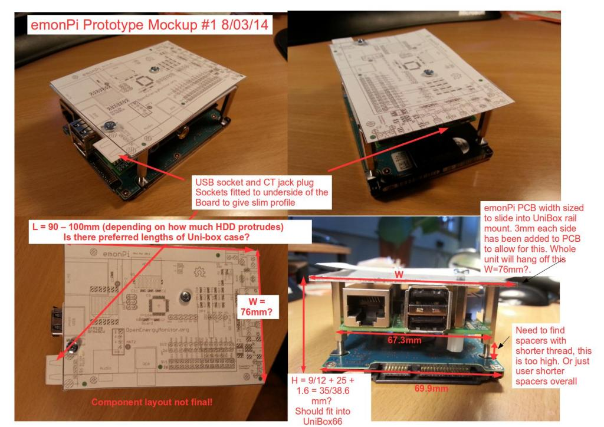
As always any ideas or thoughts on the design would be most appreciated.
Re: emonPi Development Ideas
Be aware of the HDD needing cooling, since emoncms doesn't allow it to spin down (10 sec sampling). So we need some vent holes or the hdd needs to use the casing as a way to get rid of it's heat.
Re: emonPi Development Ideas
2.5" hard drives should have a standard set of holes for mounting - can the case be drilled to mate with these so that rather than hang the PCB and HDD off the case the Pi stack bolts to the bottom helping with the heat-sinking?
Re: emonPi Development Ideas
You shouldn't need the extra usb port and sata Y cable. if you power the raspberry pi through the gpio header you bypass the polyfuse that is prone to causing flakiness when the hard drive pulls enough current to trip it. (It then resets and starts this process all over again. Sometimes the current draw is on such a fine line that it will trip hours or days later randomly.)
I just tested this a minute ago using a 5V 2A power supply wired directly to the gpio pins and where the same power supply going through the usb power input a moment ago caused rapid resetting of the rasberry pi, the gpio method powered the raspi right up and it seemed to work solidly. I will test the rig for 24+ hours with emoncms and see if it rebooted at any time during that. Will post results when done. (Will check for reboots using the system uptime counter)
An onboard dc-dc converter might also be a good idea if you power the raspi through the headers. 12V power supplies seem to be more common than 5v ones, and if you use a onboard converter you can get improved voltage stability, over/under voltage protection and reverse polarity protection if deemed necessary. If you use a converter with power factor correction built in you could power the whole thing off an ac transformer and still get a good voltage measurement with the dc-dc converter power factor being near 1.
Love the work on the new board. I was planning on doing something similar for monitoring / controlling our geothermal / HVAC system, but decided a beefed up node with wireless raspi base would be better.
Re: emonPi Development Ideas
How about an mSATA SSD with USB to mSATA as a drive, would avoid the current draw of a mechanical drive
USB to mSATA and mSATA (32gb)
AUS prices I know, I will try one out for my pi
Re: emonPi Development Ideas
The whole point of using a mechanical drive for emoncms is that it writes almost constantly to the main drive. This will wear out any solid state solution quite fast (They were having sd card failures every few months) and using a msata / any solid state drive over a sd card won't fix the problem. It may last longer, especially with over partitioning for relocating of bad sectors, but it will eventually fail until the problem of constant writes is dealt with.
Re: emonPi Development Ideas
I would place the harddisk on the top, under it the shield and at the bottem the raspberry with some small heatsinks on the raspberrys processor and ethernet chip.
Why on the top?
I don't know if it's good for the harddisk to work upside down. If you rotate this setup, the raspberry is upside down, maybe not the best setup for the heat produced by the processor and ethernet chip.
Does the 2,5" harddisk get it's power from the shield?
I think I'm using a similar SATA to USB converter (bought on ebay for 2,67€), my powersupply is a little DC/DC converter (also from ebay) that can handle up to 30V input. I soldered it's output directly to the input capacitor of the Raspberry and a second cable to a USB socket where I plug in the USB power for the harddisk. All together is mounted on a small wooden board.
Re: emonPi Development Ideas
Hi,
thats looking very promising. Are there any connections forseen on the board for those of us working with impulses only and not using ct's?
Re: emonPi Development Ideas
@teslafly fantastic! That's for the info, I should have realised this. I also tested powering the Pi through the GPIO today and it powered the hdd just fine. The whole setup drew exactly 1A with my ide 2.5" drive. So yes, we can do away the the USB-A socket on the emonpi and the need for a y-cable. This will make space on the emonpi to put the terminal block for external temperature sensor and interrupt pulse counting sensor.
With regard to the hdd cooling I think we'll be ok. I'm planning to allow a good air gap between the Pi and the hard drive and the aluminium case will help keep it cool. I think the overall effect will be that the hdd will be cooler than in most computers, however I will test this with a temperature sensor in the first prototype. I wonder I the Pi can read from the internal SMART temperature sensor of the drive?
With regard to orientation: In most laptops hard drives run upside down so I don't think it's an issue. Doing some reading online it seems all the major hdd manufacturers claim their drives can work in any orientation without causing harm. http://www.howtogeek.com/128397/does-hard-drive-orientation-affect-its-lifespan/
Progress on prototype is ticking along. I'm just about ready to start the routing of the board. Working out the physical contracts has taken longer than I hoped. I'm aiming to get first prototype pcb sent off for manufacture next week.
Re: emonPi Development Ideas
emonPi is looking good Glyn!
With regard to the usb power hdd issue, I've not researched this so forgive me if i'm wrong but it was my understanding that, putting aside any pi specific considerations, the purpose of the y lead was to spread the hdd power demand over 2 usb ports as the usb 2.0 ports are (or were) limited to 500Ma each and during spin up an average 2.5" hdd draws 1amp. I think later PC's have have higher spec'd "charging" usb ports but given the pi's power restrictions it would be unlikely to have the uprated usb ports.
If that is the case 2 things to consider are the wear and tear of momentarily trying to draw up to 1 amp from a port with insufficient capability at the crucial boot up time and if some hdd's do draw a bit more than others and are forced to use a lead they will have to sacrifice wifi or use a hub.
Maybe worth checking further before committing, it maybe ok but its best to be sure :-)
Paul
Re: emonPi Development Ideas
Glyn, I'm not sure why you moved from the 3mm socket for the temp sensor connection on the TXV3, (you still supply the jacks with the sensors though they are now redundant) but for this new setup, would it not be more sensible to have this socket than a hole for wires to a terminal block? If you want more than one sensor you need some form of bulk connector outside anyway. The other thing that may be needed is a pulse counting input as well.
Re: emonPi Development Ideas
Yes pulse interrupt input will be included on terminal block. We found that many people (including ourselves) found wiring up the 3.5mm jacks a bit fiddly. On the emonTx V3 Iv enjoyed being able to connect the sensor directly into the terminal block. What do other people think? Terminal block or 3.5mm jack plug for external temperature sensor connection? At least using a terminal block means the CT connections don't get mixed up the with temperature sensor connection!
Re: emonPi Development Ideas
Yes the wiring is a bit fiddly and I went direct on the V3 but pushing the wire through this enclosure could be just as fiddly especially as you will need to find wire that fits (not so easy!). Perhaps a prewired jack with bare wires the other end might be a solution?
If you do go away from the jack, you may as well stop supplying them as standard with the sensors and just offer them as an option.
Re: emonPi Development Ideas
I think there is a planiffication proble. The main question is: which kind of users will use emonpi? There is only one: people with internet at home who want to spend as less as possible in sensor system.
If I dont have internet i need the Pi close to my TV in order to see the sensors info so i dont use this solution. And if I dont mind pay 50€, more wireless solution is more clean because i can hide Pi easily and power it directly by the router.
So emonPi shouldnt include Hdd compulsory, I think this method has to be the cheapest, prepared to wifi dongle (I have never had any trouble with TLink Amazon mini dongle) and gateway installation. The first develop was closer to this idea, simple, cheap and easy, the last one is a monster too big and as expensive as wireless solution. For social housing (field where i work) the best solution is the cheapest one , you can return the investment before and easily with the same services.
Big work and big team, guys you are so marvelous, thanks!
Re: emonPi Development Ideas
I dislike the use of 3.5mm jacks for sensors, especially if you are running them over any distance. They really limit the cable you can use down to 3/4 core, nothing too stiff.
Have you considered using one of the relatively standardised pin-outs on RJ45 or RJ12 for 1-Wire:
http://www.hobby-boards.com/store/pages/Wiring-Diagram.html
I use the RJ45 connectors for my 1-Wire bus and it works really well. Advantage is that you can pass higher voltage power for powering more meaty devices as well (e.g. I have a flow meter powered and reading via 1-Wire).
Re: emonPi Development Ideas
I'm actually building a mobile charging-Sation for electric cars with Menekes-Typ2-Connector on the Car-side and CEE-32 on the Wall-side (see GoingElectric, sorry it is in german). These boxes solve the problem, that you can't charge the E-Car at home.
Many users would like to provide this to other E-Car-Driver but they have the problem of measuring. In addition they are interested in logging and perhaps later on in billing or controlling.
So why not using the raspy and oem for this? I'm highly interested and would like to implant the emonPi in the Charging-Box.
I would prefer the connection with terminalbocks and would be happy, if the housing would fit to a mounting-rail.
Big work, thanks to the team!
Re: emonPi Development Ideas
Why an HDD? Won't a good SD card be enough?
Please leave it simple and cheap.
Camillo
Re: emonPi Development Ideas
Camillo777, Copied from earlier in the thread...
"The whole point of using a mechanical drive for emoncms is that it writes almost constantly to the main drive. This will wear out any solid state solution quite fast (They were having sd card failures every few months) and using a msata / any solid state drive over a sd card won't fix the problem. It may last longer, especially with over partitioning for relocating of bad sectors, but it will eventually fail until the problem of constant writes is dealt with."
Re: emonPi Development Ideas
ukmoose, remember:
Gateway method doesn't need any HDD, only if you want a Local view or a Local DataBase you must use a HDD. So if you only work online there isn't any problem using only SD Card (Cheaper and smarter, down my point of view).
Guy!!! what do you think about? Any advance?
Thanks.
Re: emonPi Development Ideas
@glyn.hudson smartctl should work fine on the pi. I don't have a harddisk on mine, so I can't test it, but the package (smartmontools) is available.
Re: emonPi Development Ideas
@glyn.hudson
Glad to hear it works. Here are my particular results. (Measured on the 5v rail with a Fluke 79)
I think that you should plan for high current accessories, but build this board for internet connected logging (sd only) with the capability to add an HD later externally if someone wants. This means no provisions other than usb access in the case for an HD. - If you want, I also have a reprap 3D printer, along with a laser cutter, and can work with you to come up with some prototype cases for this board as well.
I also think that terminal blocks that are detachable (like this http://rhu004.sma-promail.com/SQLImages/kelmscott/Molex/PDF_Images/usa-355.PDF ) would be best for the temperature sensors. You can unplug it to screw the wires in, and plug it back in when done. Otherwise a regular screw terminal would do the trick quite nicely. - Even for distributed sensors in which the sensors are several feet away and spliced together into one cable, like the ones I put in our geothermal system.
(Also, not quite related, but a scalar in the input section of emoncms would be nice. You could convert values into decimals before they hit the rest of the system, and convert Celsius to Fahrenheit if you live in an area that uses it, along with a host of other values. - I would implement this, but I am still quite rudimentary in the pi ecosystem so far, although strong in Arduino.)^ Edit: I'm an idiot, I found the option after a bit of digging. It's in a menu instead of a extremely visible option, sorry.
@pb66 The purpose of the y cable on the newer pi's is not to spread the power, but to extract power from a different source than the pi to avoid blowing the polyfuse. It would not make a difference on the new raspberry pi boards if you plugged in a cable to one or both usb ports as it would still blow the main polyfuse. (This may have had some merit on older boards as each usb port was individually fused, but not anymore) if you power the pi from the header, you bypass the polyfuse and prevent it from blowing in high current consumption situations.
Re: emonPi Development Ideas
Thanks everyone for input. Really useful.
I've decided to keep the USB connector just in case we need extra power. The PCB has now been sent off for first prototype. I'm away now for a couple of weeks should have a working prototype when I get back.
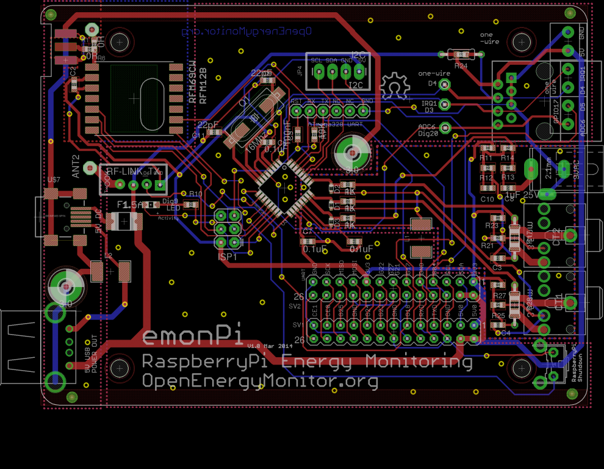
Re: emonPi Development Ideas
Great! Love to see how this turns out. and by the way, it seems that you have solved much of your constant write issues (down to a write a minute or so) so somthing like this: http://www.atpinc.com/p2-4a.php?sn=00000391 may work as well. an industrial grade sd card with an mtbf of 2,000,000 hours, a minimum of 10,000 insertions, and a TBW of 6.1 TeraBytes to 48 TeraBytes Random Writes. do you think a hard drive could be replaced by something like this?
Re: emonPi Development Ideas
Here's the schematic of the V1.0 prototype design:
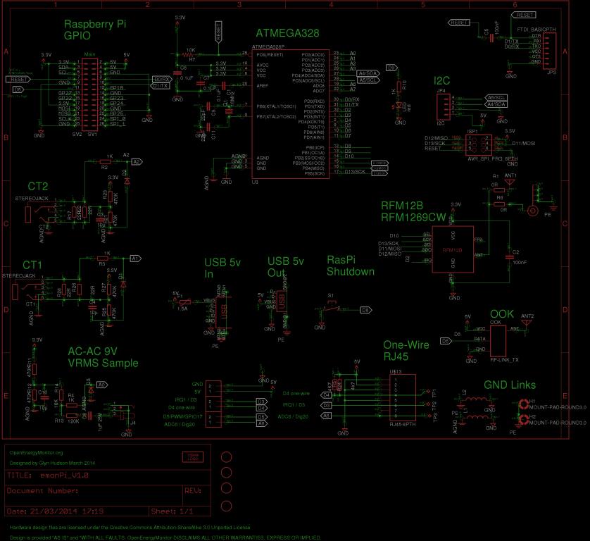
In the past week or two since my last post several changes have been made to the board. The most notable being:
Physical
It's been widened slightly to allow it to slide into an extruded aluminium case (pictured above) with the Pi mounted below then below that the HDD. The design will work with or without a HDD. I think the HDD will be cool enough as there is plenty of space between it and the Pi. However we can carefully monitor this using smartctl (thanks @dDB), I've tested this and it does indeed work on the Pi with an external HDD. It would be great if someone could help me write a script to poll smartctl every few min to get the current temperature of the HDD and post it to emoncms.
Power
I decided to keep the female USB-A port just in case the HDD requires extra power injected through y-cable. I tested this and my 2.5” hard drive worked fine powered just from the Pi's USB when the Pi was powered from the GPIO. However when a USB wifi adapter was plugged in the power dip caused the Pi to reboot. After the reboot it did seem to work ok however we are definitely operating close to the edge if we don't use a y-cable!
Temperature
RJ45 connector for temperature sensing (thanks for the lead @cybergibbons) – DS18B20 temperature sensors are great that many of them can be strung together on a one-wire digital data bus. The issue is on the emonTx V3 it's hard to connect more than two external sensors since the wires of more than two sensors won't physically fit into the terminal block. I know many users who have wanted to connect four for more sensors e.g. monitoring heat pumps. A solution for this I hope is to move to an RJ45 connector which breakout boards are easily available to connect more than one sensor. RJ45 can also be broken out to terminal blocks if needed , DS18B20 temperature sensors are even available ready made with RJ45 or cables can easily be made up yourself. As you can see I’ve left pads on the emonPi PCB for a terminal block instead of RJ45 to give the option if only one external temperature sensor is to be connected. IRQ digital (for pulse counting) and an analogue input have also been added onto the RJ45.
PCB layout - Antenna, Analogue and EMC optimisation
Edge SMA connector added – the emonPi has option to use wire whip antenna or edge SMA connector for RFM12B/69 antenna. The antenna option can be selected by orientation of 0R SMT resistor. An edge mounted SMA is easier to add at manufacture and should have less attenuation than the 90-degree elbow connector on the emonTx V3.
Optimisation of ground planes and RF traces – I've been reading up on antenna design guidelines and best EMC design practices. I've done my best to keep the antenna traces as short as possible and use 0R resistor to select antenna option (SMA / whip) to avoid any excess antenna track. The top GND plane below the RF module has been removed and traces under the RF module are kept to the minimum. I've added a special GND plane for the metal body of the SMA antenna (which will be connected via the fascia plate to the enclosure) and the bodies of the USB connectors this (PE) GND is connected to the main GND via a ferrite bead. Like on the emonTx V3 there is also an analog GND plate which isolated with a ferrite bead to reduce digital noise on the analog inputs. I've also taken care to carefully route power and clock lines in an EMC friendly way. Time (and lots of testing!) will tell if this helps make a difference. I'm no expert on these sort of things, I'm trying to learn as I go along, I would be interested to hear any comments from anyone who has experience in this field.
Protection
Extra protection – TVS diodes and current limiting resistors have been included on the analog inputs to protect the Atmega and Pi from voltage spikes. There is also a PTC fuse (1.5A holding) on the mini-B USB input to protect the power supply from over current. The Pi's TRV diodes on the 5V rail should help protect against voltage spikes.
Re: emonPi Development Ideas
Very impressive! it looks like you've put a lot of thought into this.
I've got a little question, why have you used the emontx v3 ac input circuit design over the v2's. I thought the v3 ac input had been changed just to enable you use a single power supply and that connecting the 9vac to the gnd rail was a necessity for that to happen, now you are powering the emonpi by 5v dc I would of though the original v2 circuit would be more isolated from interference or is that not the case or indeed was there an another reason the emonpi & v3's ac inputs are different to the v2?
Paul
Re: emonPi Development Ideas
Hi Glyn,
are there only two Ports for measuring current (CT1 and CT2)? What is about measuring 3-phase-scenarios like E-Car-Charging?
tango
Re: emonPi Development Ideas
The emonPi is primarily aimed at home energy monitoring, the emonTx V3 would be better suited to three phase and large installations . Sadly there was no physical space on the emonpi board for an additional CT connecto.
However the way we currently do three phase monitoring using three CT sensors and one voltage adapter is not ideal since three phase supply are often not balanced. In the future we plan to introduce a design with option for 3x ac voltage adapters.
Re: emonPi Development Ideas
"In the future we plan to introduce a design with option for 3x ac voltage adapters."
That's good to read. I think a lot of users in continental Europe and in the Americas will be glad to know that.
Re: emonPi Development Ideas
"However the way we currently do three phase monitoring using three CT sensors and one voltage adapter is not ideal since three phase supply are often not balanced. In the future we plan to introduce a design with option for 3x ac voltage adapters."
This is a nice idea although I am using one voltage sensor and three CTs with very good success (with phase shifted voltage table for CT2 and CT3). Accumulated error is ~+/- 5% compared to a commercial 3-phase meter.
Practically it is not so easy to use three AC voltage adapters on all phases without invasive action because it is not usual to have outlets (wall sockets?) of all three phases available in (or near) the switchboard. So in most cases you have to ask a friendly electrician to install them for you.
But in that case you could also ask him to install a complete three phase power meter with import/export feature and Modbus readout which isn't much more expensive.
Just some thoughts .... ( I had the same 'problem' and have now installed the ready made three phase meter with loads of measuring data available via RS485 and Modbus).
Re: emonPi Development Ideas
Nice post
Re: emonPi Development Ideas
Hi,
I know several people interested in installing OEM nodes in commercial buildings in France. As most of them are powered by a 3-phase supply, the OEM system is not suitable as it is now. So, a design with option for 3 phase monitoring is a MUST feature ! Most needed that the emonPi, but it is only my opinion ...
According to me, it is not a good idea to plug 3 ac voltage adapters on 3 sockets. It would be much better to add a DIN rail unit in the fuse box to collect the three voltage and to power
theseveral EmonTx. Have a look on this proprietary solution to understand what I mean.Anyway, congratulation for the amazing work !
Regards,
Eric
Re: emonPi Development Ideas
"It would be much better to add a DIN rail unit in the fuse box ..."
Yes, perhaps, but one of the basic ideas of OEM (correct me if I am wrong!) was non-invasive installation! This is simply not practical for a 3-phase installation and that is just what I wanted to express.
And if you decide to use an "invasive" installation method, why not use a complete three-phase-meter with infrared or RS485 readout? It is cheaper, has better accuracy and in most cases will be certified.
And yes, the whole OEM thing is an amazing work!
Re: emonPi Development Ideas
Hi,
"one of the basic ideas of OEM (correct me if I am wrong!) was non-invasive installation"
I have no idea if it is true or not but I have never seen a 3 phases system in France with all phases directly accessible on the fuse box. (I mean with a socket for each phase). So, an invasive action seems to required for three phases monitoring (except with the voltage sampling method with balanced load).
"why not use a complete three-phase-meter with infrared or RS485 readout? It is cheaper, has better accuracy and in most cases will be certified."
Could you please tell more about that ? Any example ?
Eric
Re: emonPi Development Ideas
Hi Eric,
I have a 3-phase ISKRA MT174 meter with CTs which I have had installed as a 'self-imposed' export meter that has RS485 connectivity in my version. I haven't done anything about trying to read that data yet but do hope to but I'm not an experienced coder.
The display is setup to cycle through instantaneous and cumulative import & export readings.
I have a separate Landis+Gyr 5219B-RX meter to record solar PV generation adjacent to the two 3-phase inverters in the building's loft plant room. Unfortunately this has no electrical data interface, only the flashing LEDs.
The 3 phase voltage inputs installed by an electrican are fed from three breakers (linked I think) in the mains distribution board in the same switch room where the mains also comes in from the grid.
Steve
http://www.camax.co.uk/electricity-meters/mid-billing-meters/iskra-mt174/
http://www.camax.co.uk/files/3913/5116/9851/MT174-TD-v1_2-ang.pdf
Re: emonPi Development Ideas
OEM was initially designed as a totally non-invasive system. Also, a three-phase system is very, very rare in a UK domestic installation.
I also understand that OEM is popular in UK schools and colleges and for those "customers", anything that requires installation of any sort other than a plug and socket is totally impractical given our Health & Safety legislation.
If you want a complete meter, check all the usual suspects: Siemens, ABB, etc
Re: emonPi Development Ideas
"...I have never seen a 3 phases system in France with all phases directly accessible on the fuse box."
Not in Germany either. This is exactly the reason why I wrote my original comment!
"Could you please tell more about that ? Any example ?"
As Robert wrote already, just have a look at what the 'usual suspects' provide. I would add to the list: Landys&Gyr, Easymeter, Hager, Finder, Eltako and everything that the utility companies install. There are also a lot of chinese meters on the market with different names. I have one from the german company B+G E-tech. Type is SDM630 and original manufacturer in China is Eastron.
Jörg.
Re: emonPi Development Ideas
emonPi V1 prototype screwed together onto Raspberry Pi and 3,5" external HDD. Physical dimensions all seem to be correct :-)
Next step: assembly the board...
I plan to post photos of the development to the OpenEnergyMonitor G+ album
https://plus.google.com/photos/114424977493521882459/albums/5999656723837107313
Re: emonPi Development Ideas
Looking Good Glyn ! (the emonPi, that is !)
Paul
Re: emonPi Development Ideas
I'm guessing you mean a 2.5" HDD and not a 3.5" HDD <VBG>
Re: emonPi Development Ideas
Just tested the prototype in a Lincoln Binns case, the length and the width of the case will need to be extended and custom fascias made but apart from that it fits!
More photos in G+ album
https://plus.google.com/photos/114424977493521882459/albums/5999656723837107313
Re: emonPi Development Ideas
Hi
I have been following this thread with great interest as I have been thinking of using the
Solar PV power diversion with emonTx using a PLL, emonGLCD , by Martin Roberts
and the Rpi as an Emoncms server.
would I be able to this on your EmonPi ?
thanks
Mike Pooley
Re: emonPi Development Ideas
Watching this topic very very closely, and I admit I am very excited about the progress made. I saw there was some comms
with Lincon Binns about the case on May 1 - any update on progress/testing etc...
My setup is using a pi for monitoring the RS485 port on my Aurora inverter (Solar PV) and I use the other
usb port for Wireless. I am running off an SD card for the last 14 months, with no problems at all, and I would
am planning to use Emon for an OpenHAB implementation I have started on.
Would really like to know about progress- thanks
Re: emonPi Development Ideas
I am worried, this thread has gone very quiet ?
Re: emonPi Development Ideas
Hi guys!
Sorry for lack of updates, development on the emonPi is still ticking along. I have been working with Lincoln Binns to make the emonPi fit nicely in a case. I'm also hoping to add an LCD as standard to display some info like IP address, wifi status, emoncms status and current Kwh/d etc.
Some more photos of the render on the G+ page: https://plus.google.com/114424977493521882459/posts/Y5BB9m3bb2t
The next stage is is to finish testing of the emonPi functions then get an advanced prototype PCB (hopefully final) done.
Re: emonPi Development Ideas
Looks so good!
You are my hero Glyn! XD
Re: emonPi Development Ideas
Hi,
I don't know if you've already talked about this topic.
I was thinking that usually is not easy to find an electrical socket beside the RCD, so we should take power supply from the output line of the RCD itself. In order to do this a solution could be to incorporate the AC-AC voltage adapter's circuit inside the EmonPi case and connect it using two wires coming out of the case.
See the attached image.
Best regards
Silvia
Re: emonPi Development Ideas
An RCD on its own does not automatically provide overcurrent protection. It is impossible to see exactly what you are describing from the picture, but if you are suggesting taking the supply without having the benefit of overcurrent protection, then that would not be acceptable under the regulations in the UK, and it would certainly be bad practice anywhere.
Re: emonPi Development Ideas
Hello everyone,
Here's an an update on emonPi progress. Since my last update I've had the emonPi enclosure prototype back from Lincoln Binns, I've also ben doing some testing, documenting and writing firmware examples as I go along.
Enclosure
I'm very happy with the overall look, feel and function of the enclosure. There are a few little tweeks which need to happen: like opening up access to the Pi's Ethernet port in the end-plate! The enclosure can easily be wall mounted with attachable brackets.
I will get another end plate made up soon which will include a few tweaks and a printed silk-screen.
End-plate silkscreen print draft:
See G+ album for more photos: https://plus.google.com/b/114424977493521882459/photos/+OpenenergymonitorOrgpage/albums/5999656723837107313
I've been documenting the technical setup notes as I go along on the wiki: http://wiki.openenergymonitor.org/index.php?title=EmonPi
LCD
Give that low cost of 16x2 character LCD's it was thought to add the option of an LCD display to emonPi. Keeping in mind that the emonPi will be located next to the electricity meters (probably in a cupboard!) so the LCD is not designed to be the primary display unit for the energy monitoring system; it's main function will be as a status LCD to show the system is working correctly at a glance. One of the more useful functions of the LCD would be to show the RaspberryPi's IP address on the local network as well as the web / network connection status. See my video demo of the sort of data the LCD could show, everything apart from the IP address and network status is just a demo!
https://www.youtube.com/watch?v=qHizy1S4WXI
The python code driving this demo is up on gitHub: https://github.com/glynhudson/emonpi/blob/master/LCD/i2C_LCD/emonPiLCD.py
I would love to your your thoughs on the emonPi LCD demo video, what other type of info do you think could be displayed? Or have you got an idea on a better way to display the info?
I decided to use an I2C LCD so it would not take up too many pins. I initially thought to connect the LCD's I2C to the ATmega328 on the emonPi shield, however it soon became apparent that it would be best to connect the LCD's I2C to the Pi's GPIO I2C connection to allow more complex data to be displayed and easily driven from a python LCD controller script. However there is a problem that on initial power up the Pi takes a long time to boot-up and start the LCD python controller script, during this time nothing can be displayed on the LCD, this is not a good user experience. To fix this maybe the ATmega328 could be used to push a startup message to the LCD on the I2C then hand-over control to the Pi once it's booted? This will require the LCD's I2C to be connected to both the Pi GPIO and the ATmega328; testing will be needed to check they won't interfere with each other.
Testing
I've now started testing the main emonPi functions:
Test sketches have been pushed to GitHub: https://github.com/glynhudson/emonpi/tree/master/Atmega328/test_sketches
Temperature Sensing
The emonPi has an RJ45 port for I/O which includes a one-wire DS18B20 bus, IRQ input for pulse counting an ADC input / output.
We have had some DS18B20 sensors ready wired on RJ45 connectors made up, these are now in the shop:
More than one sensor can be connected using an RJ45 to multiple RJ45 to RJ45 to terminal block (for wiring up standard encapsulated DS8B20) breakout boards from Sheep Walker Electronics, we will soon also be stocking these in the OpenEnergyMonitor shop. This should make it super each to connect many DS18B20 sensors to the emonPi for applications like heat-pump monitoring which requires six DS18B20 one-wire temperature sensors.
Sensor cables can be easily extened using standard RJ45 cables and an RJ45 coupler. Even though the sensors use RJ45 there should not be confused with TCP/IP, they won't work hooked up through a router!
http://www.sheepwalkelectronics.co.uk/product_info.php?cPath=23&products_id=56
http://www.sheepwalkelectronics.co.uk/product_info.php?products_id=64&osCsid=84463d5394d4ac4d95f0d50592ed8115
Next PCB revision (V1.1)
I plan to get another revision of the emonPi PCB finished soon, this will include the following:
Re: emonPi Development Ideas
What type of USB port are you using for the 5V DC Input?
From the photo it looks like a Mini-B?
Given that this is a Pi based kit. Have you considered using the Pi standard micro-usb, to enable the reuse of chargers and cables?
Re: emonPi Development Ideas
Yes, its a mini B, I have considered it but I've found the micro usb connector the be a bit flimsy and difficult to plug in when the unit is installed. I see you point but I think most people will have a spare mini B-usb connector cable. The same USB power supply can be used.
Re: emonPi Development Ideas
Strange, the micro was designed for double the number of insertion cycles compared to the mini.
Re: emonPi Development Ideas
When I say 'flimsy' what I meant was prone to coming away from the Pcb rather then the actual socket it's self breaking. I think the number of insertions the power connector on the emonpi will be subject to will come no where near the insertion limit of either socket! The micro connectors are also tricky to smt solder and re-work.
Re: emonPi Development Ideas
Hi,
It looks great !
I like the idea of using a RJ45 port to connect the one wire bus and all inputs.
Some ideas regarding the LCD display (which is very useful)
- add some info about the radio (global status, node ID, frequency, ... and why not a flashing info when receiving a packet)
- add the name of the running sketch
- add some info on the HDD (status, available space, ....)
- add a push button closed to the LCD to select the requested info using a circular way.
Looking forward testing it,
Eric
Re: emonPi Development Ideas
Thanks, good ideas regarding what info to show on the lcd.
I've just tested today, it's possible to have the lcd connected to both the pi and atmega i2c at the same time, this will allow us to show boot up and shut down messages on the lcd driven from the atmega then once booted the pi python lcd driver script will take over to handle showing more complex info.
I think you're right about needing a push switch to cycle between views. I was hoping that just cycling would be enough but I think you might have to wait an unacceptable length of time for the lcd to cycle through all the displays.
Yes, I'm also excited about RJ45 temperature sensing. It will make hooking up a network of temperature sensor so very quick and easy using RJ45 cabling.
Re: emonPi Development Ideas
Hmm. Does everyone have a set of RJ45 crimps?
Re: emonPi Development Ideas
Their not essential as we've got a breakout board into standard terminal blocks for wiring up normal encapsulated DS18B20 sensors:
Or sensors ready made on RJ45 can be purchased from the shop, link above.
On another topic just realised I have not posted a decent image of the top of the emonPi PCB now it's been (hand) assembled, here it is in all it's ugly prototype wire glory (result of a rather rough GPIO header de-soldering job which ripped off some tracks..woops):
Re: emonPi Development Ideas
Just a quick update on how things are progressing with the emonPi:
New PCB revision (V1.1) has been finished, built up and tested. Everything is working as expected :-) . See my post above for the changes.
A push-button has been added connected to a spare GPIO pin to allow menus to be cycled on the LCD.
The enclosure-end plate fascias vector screen print design as been finalized and prototype made, I think they look great! #
See G+ album for lots more photos: https://plus.google.com/b/114424977493521882459/photos/+OpenenergymonitorOrgpage/albums/5999656723837107313
The software is also taking shape, Trystan is currently working on integrating support for the RFM68CW into emonHub. I've been writing the emonPi LCD control software. Both the ATmega328 and RasPi (python script) can write to the LCD via I2C. It's great having this function since the ATmega328 can print 'booting' to the screen long before the Pi starts up (it takes a while) and a shutdown procedure can be printed on the LCD when the hardware shutdown button is pressed to gracefully shut down the Pi (we've found this to be very useful).
I'll let Trystan do a proper post explaining how the software for the emonPi will work. In the meantime feel free to have a browse of the code we have for the emonPi so far (mainly examples): https://github.com/glynhudson/emonpi and take a look at the emonPi technical wiki: http://wiki.openenergymonitor.org/index.php?title=EmonPi
Re: emonPi Development Ideas
Hi,
Any idea / planning on when will be available emonPI? Can't wait to order one!
Congratulations for your good work!
Jordi.
Re: emonPi Development Ideas
I second that. Good work.
Is there an ETA on a production version?
Thanks, Ken.
Re: emonPi Development Ideas
Hi guys,
Thanks for the kinds words. Sorry for the lack of updates, I'm just as keen as everyone else to get this unit into production as soon as possible. However there are two things which have pushed back the schedule:
1. Model B+
I'm sure you've all heard of the Raspberry Pi Model B+, this is an upgrade to the model B and will take the place of the model B. Even thought Raspberry Pi foundation say they will continue to support to B it would be silly to launch the emonPi without B+ compatibility. I think the only change needed is to add some mounting holes to the emonPi PCB and make a new front and back enclosure fascia panel.
2. Emoncms low write
https://github.com/emoncms/emoncms/tree/bufferedwrite
Trystan has been working on a version of emoncms for the Pi which drastically reduces the number of writes made to the SD card, this should result in long SD card lifespan and negate the need for a HDD connected to the Pi. Testing is going well, this is soon due to replace the IPE read-only SD raspberry Pi SD card image, There is an SD card image for the new low write version available to download from the link above together with install instructions, please join in the testing to get some more data points.
This is good news, we're considering reducing the size of the emonPi enclosure assuming that a HDD will not be used. What do you think to this suggestion? Do you think many users will want to use a HDD with the emonPi? If a HDD was to be used I think this would be a better case as it as built in SATA controller: https://www.indiegogo.com/projects/plusberry-pi-the-ultimate-raspberry-pi-case
Re: emonPi Development Ideas
I think running this on an SD card would be a great step forward. I have mentioned this in previous posts, and was shot down , "gently I might add", about the issues with SD.
I have been running Solar123 on my pi for around 2 years (in Oct) with absolutely no issues.
Really looking forward to the EmonTx version for the pi, although, would love more CT inputs - was wondering if there are any opportunities to multiplex CTs ?
Cheers and great work btw
Re: emonPi Development Ideas
i tend to agree, native support for 3 phase would not harm anyone, and now i can hear people shout 3 phase is not so common in the UK i know, but the world is not a bottomless black pit outside the UK :-DEDIT, and by 3phase native i mean 3 ct and 3ac. I know you can calc the 2 other ac's but that is not native, just a "hack" at best.[Edit: This is going off-topic - see 3-phase EmonTX? - RW]
Re: emonPi Development Ideas
This comment was off-topic. See 3-phase EmonTX?
Re: emonPi Development Ideas
Hi,
For sure, it's a good idea to postpone the ETA of the EmonPi. Today, one can do everything without it ! So why hurrying up ?
If a hdd is not required with the low write emoncms version (great news!), the EmonPi must not have one built in. The EmonPi will be for sure cheaper and more reliable. Let's keep it simple ! If someone want to add a hdd (why?), a usb hub is fine. (Glyn, the second link above is incorrect).
Regarding the three phase, I am also looking forward having a node with 3 phase native (3CT+3AC) but ... I don't think it's relevant for the EmonPi. According to me, the EmonPi should remain a node as simple and as cheap as possible to be deployed broadly.
The three phase should be supported on a EmonTX-3phase version.Eric
[Edit: This is going off-topic - see 3-phase EmonTX? - RW]
Re: emonPi Development Ideas
Hi,
Sounds good to wait for the latest rasp release and IMO it is a key point to be able to run emoncms in a SD setup. Simpler and cheaper!
Regarding using dataloggers and SD cards, I can share my experience in a similar setup. I am one of the developpers of www.wfrog.org and since September 2009 I have three weather stations working using an ALIX3D2 SBC with a 1Gb SLC Compact Flash card. I use voyage linux (stripped down debian) with two ext2 partitions: one ro for the os and another one rw for the data. wfrog is configured to store data in a Firebird database and writes a record each 5 minutes. Considering indexes and table this might imply several blocks written every 5 min. So far I've had no failure and now it is close to 5 years already. I did some test with non SLC cards and they died in a month (they were good quality bug non SLC), so flash memory quality is very important!. Some links regarding my setup:
Jordi.
Re: emonPi Development Ideas
Hi, another vote for the SD card option, a definite improvement.
The redesign to suit the RPi B+ also sounds wise. Reading up, there are a number of incremental improvements for the B+ including one we are all concerned with:
"Lower power consumption. By replacing linear regulators with switching ones we’ve reduced power consumption by between 0.5W and 1W."
Although 3 phase is not applicable for me, in my current setup I have the the hot water and the rest of the house measured separately, by using one of the inputs designed for three phase monitoring. I combine the two to get a total. ( Note: this is using a CurrentCost Envi not an Emon device )
I realise the emonPi currently has two CT inputs, but I have often thought it would be good if I could break down monitoring even further from within the fuse box. For example: hot water, lights and sockets. Or even further by clamping individual cables leading to sockets.
Would it be possible to use the RJ45 breakout to facilitate additional CT inputs? or maybe even a separate USB device to be used in conjunction with the emonPi?
Thanks, Ken.
Re: emonPi Development Ideas
Agree with Ken - more CT inputs would be really nice - although I can see with the EMonTXv3, we have 4, I was just wondering whether its even possible to multiplex the CT inputs with some sort of Analog multiplexer (ADG506A) ??. Having no experience in this realm, I clearly have no idea how hard/easy it is to control this device with the Pi
Probably off topic for this - and happy to create a separate thread robert
cheers
Re: emonPi Development Ideas
Jordi, its really great to hear your experience with long term logging to SD cards and SLC over MLC, Do you know what your typical kb_wrtn/s measured using iostat is on the 5 year system?
Re: emonPi Development Ideas
Jordi, did you see my testing and benchmarking here: https://github.com/openenergymonitor/documentation/blob/master/BuildingB...
Re: emonPi Development Ideas
Hi Trystan,
I've read your testing. Good work!.
Here is the data of my system. Since I don't have systats on my system I've just taken two measures to check /proc/diskstats in a 24 hours period. This is the result following your testing (never done it so thorough before):
wfrog:~# date Mon Aug 11 23:05:40 CEST 2014 wfrog:~# awk '/hda2/' /proc/diskstats 3 2 hda2 1310 482 92290 12351 38560 16 459664 3208037 0 1085218 3220386 wfrog:~# awk '/hda2/ {print $10}' /proc/diskstats 459664 wfrog:~# date Tue Aug 12 23:22:05 CEST 2014 wfrog:~# awk '/hda2/' /proc/diskstats 3 2 hda2 1310 482 92290 12351 48868 18 579912 3940396 0 1328971 3952744 wfrog:~# awk '/hda2/ {print $10}' /proc/diskstats 579912So, since the 10th field is sectors written(https://www.kernel.org/doc/Documentation/ABI/testing/procfs-diskstats) this implies that in 24 hours my system has written 120248 sectors.
Assuming:
- That the CF card is 1 Gb,
- The CF card being SLC theoretically allows 100.000 rewrites.
- The wear leveling mechanisms work properly.
- The sector is 512 bytes
Then we get a theoretical duration of aprox. 4778 years. If that is right we won't see the CF Card fail :-)
hda2 is an ext2 partition and only contains the firebird database. Everything else lives in hda1 which is readonly.
Jordi.
Re: emonPi Development Ideas
Hello,
Sorry for the delay in updates, the release of the B+ pushed things back a little. I've now had a chance to re-work the board to make it compatible with both the raspberry Pi model B and the B+. Prototype PCB is being fabbed as we speak :-)
As I mentioned in my last post, due the the success of the emoncms low-write SD card image we have decided to drop the HDD from the emonPi (the mounting holes are still there if you want to use a HDD). Dropping the HDD will allow us to make the enclosure smaller (it was a bit of a brick!) and bring the cost down.
Other changes in this revision include:
Here's the latest PCB and schematic:
Re: emonPi Development Ideas
Glyn now that its so close are you ready to nail your colours to the mast ?
When are we going to be able to order one ?
Lionel
Re: emonPi Development Ideas
We're certainly on the home right now! As soon as we get this latest PCB rev back from manufacture and test compatibility with B+ we will get the unit into manufacture as soon as possible. As always with these things it's very difficult to set a release data as there are millions of potential variables which could slow us down. Rest assured I will keep you updated on this thread and progress as fast as possible. We may look to have an initial release to a group of beta testers to help test firmware. I will post details of this on this thread when the time arrives. Thanks for your support, messages like this help keep us focused!
Re: emonPi Development Ideas
Just checking in - how is the prototype going - still very interested
Re: emonPi Development Ideas
Hi!
No news yet? I am still very interested...
Jordi.
Re: emonPi Development Ideas
Hi Michael and Jordi,
Thanks for your encouragement, I have progress to report! I recently posted a few photos to G+ showing the new emonPi design fitting nicely onto a RasPi B+, its taken a few board revisions to get this right. The design is now with the case manufactures, they are going to be re-working the custom fascia to fit the B+ and the new design. I hope to get manufacturing quotes before Christmas and get the board and case into manufacture after Christmas.
Very sorry again for the delays, thanks for your patience. things always take longer then I think / hope!
https://plus.google.com/114424977493521882459/posts/VsmKPhTJGxm
Re: emonPi Development Ideas
Final enclosure design CAD render, getting final (hopefully!) prototype made up next week.
Re: emonPi Development Ideas
I'm a little late to the party and deffinatly don't want to be a party pooper; but I have to question your choice of a Raspberry Pi. Especially since the Open Hardware logo is very big on the device.
As a big open source soft/hardware guy, I applaud your desire to be as open source as possible; but why then choose the Pi. It is not opensource hardware, it is not really open source software (the software stack that runs on it, linux etc is, but the software that is 'pi', the bootloader is not).
Being a bit biased, i'm part of the linux-sunxi community, why where alternatives not explorered? Olimex for example has a neat little board, that's not much more expensive then the RasperryPi, the Olimex Lime. https://www.olimex.com/Products/OLinuXino/A20/A20-OLinuXino-LIME/open-so...
The interesting bit here is, that it is both Fully open source hardware (the PCB) and even the bootloader has been open sourced. If such alternatives didn't come to mind or you guys where not aware of it, well here you go :p
Additionally, it is superior in every form the the Pi. Faster, armv7, single and dual core variants, optional NAND flash available, memory configurations available of up to 1 GiB (cubietruck even has 2 GiB, but those are not fully open source hardware boards, open schematic only).
Anyway, just sharing some thoughts, and seeking an answer to the 'why choosing closed source hardware, when there are open alternatives'.
Re: emonPi Development Ideas
I fully support the pi as a platform.
Pragmatically, pi has orders of magnitude larger support, options, knowledge and community eco-systems
in place than the "true" open source systems out there. In reality its the "activity" on the systems that really
matter. No point of open source, if no one is contributing, and the pi eco-system has so many contributors.
Many doing unbelievable reverse engineering to get around the issues you discuss (and they are there, I admit, having suffered from the USB driver smokescreen).
Anyway my 2c
Glyn, Hows the prototype btw
Re: emonPi Development Ideas
Hi guys,
Sorry for the delay in updates, things have bee nice and busy.
@oliver - The Olimex looks like a super tidy little board. I agree it would be nice if Raspberry Pi was totally open hardware. But it is as open as it needs to be to make it useful. The Raspberry Pi foundation always seem to be striving to be more open, Broadcom and being more 'open' then before with regard to releasing software stacks etc. For us the choice to use the Raspberry Pi was largely down to the community around it. The Pi is used and loved by many many people, this makes it a good platform on which to build upon.
emonPi Update
The emonPi is now in a very exciting stage of development. PCB design and enclosure design has been finalised. Manufacturing quotes and component lead times are being tied down and firmware dev in in full swing. Enclosure manufacture has started and PCB fabrication will begin in the next week or so with manufacture penciled in at the end of the month / beginning March. With any luck the emonPi should be in the shop by in March. We will offer the emonPi as a shield to attached to existing Raspberry Pi's (B, B+ and 2) compatibility or as a full unit with the enclosure, with or without the LCD the suit applications and budgets. The enclosure will include detachable wall mount-lugs.
Linclon Binns have done a great job shrinking down the emonPi enclosure (now we have decided not to include a HDD) here photos of the final prototype, the final version will have a silk screen print on the end-plates:
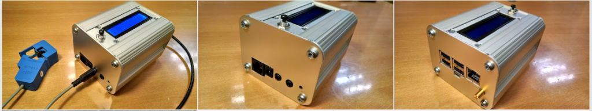
See more photos: https://plus.google.com/b/114424977493521882459/photos/+OpenenergymonitorOrgpage/albums/5999656723837107313
Our attention is now on developing the firmware / software for the emonPi. Here is a block diagram showing how everything will fit together. I will discuss the firmware / software developments in my next post. If anyone is interested in seeing how things are going (suggestions welcome) see the emonPi github: https://github.com/glynhudson/emonpi/
Re: emonPi Development Ideas
PCB's and components have now been ordered for the first manufacturing run and finished enclosures have arrived! Exciting times
Re: emonPi Development Ideas
Glyn, on your schematic you haven't included the OOK transmitter. Might be an idea to add this as it is an inherent part of the design and will need firmware support.
Simon
Re: emonPi Development Ideas
The OOK transmitter won't be populated out of the box as it will probably only be of interest to a few keen users. Overtime as firmware develops we will look at merging it into the main firmware if people are keen to make use. Same goes for the EEPROM included to meet Raspberry Pi HAT specification. Does anyone have experience building Linux device trees with using the EEPROM to identify the emonPi?
http://www.raspberrypi.org/introducing-raspberry-pi-hats/
Re: emonPi Development Ideas
We're getting super close to launching the emonPi. Exciting times. If your interested in the emonPi I've just put together an expression of interest form so you can be the first to hear when we launch: http://openenergymonitor.org/emon/node/10239
Re: emonPi Development Ideas
Had not been back to the thread in a while. Sad to see the HDD was dropped; I use my Pi for more than just emoncms (weather station monitoring as well) so need the HDD. Any chance of stretching the enclosure and providing that as an option? As far as I can see there is no one else that offers such an enclosure.
Still, it does look really good. Well done.
Re: emonPi Development Ideas
HDD has only been dropped from the enclosure, it still fits on great onto the emonPi. All the mounting holes for the HDD are still there. See photo:
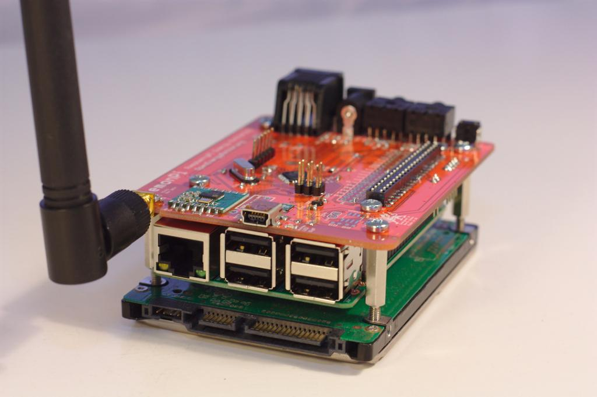
Re: emonPi Development Ideas
But will it also fit within the Lincoln Binns enclosure?
...an earlier post suggests not.
Paul
Re: emonPi Development Ideas
Correct, it won't fit in the case with the HDD I'm afraid
Re: emonPi Development Ideas
emonPi kickstarter page is live!
https://www.kickstarter.com/projects/openenergymonitor/emonpi-open-hardware-raspberry-pi-based-energy-mon
Thanks everyone for your help and support developing the emonPi. Sorry it took longer than any of us hoped to get to this stage.
As always feedback is appreciated :-)
Re: emonPi Development Ideas
Why does the emonPi only have two CT input circuits?
Sorry to ask this so late, but I have only just got my emonTx V3 going, so only now do I have a better understanding of what works, what's good and what isn't.
I have 4 active CT on my emonTX and they don't even cover the PV system. I am not sure if other people only have very basic electrical systems or demands, but I would have thought what we have isn't that different in complexity to what many other people have. Only by having the additional CT was I have to detect the really high standby 50 to 100W of one of our air conditioners and what appears to be around 40W on the others. Sure, I realise most people don't have three air conditioners, but they may have heat pumps, boilers or electric hot water which is a significant cost centre.
May be people don't realise the advantages of knowing in more detail what is using the power in their house.
To be honest, if there was little more than the cost of the additional CT, I would probably have a couple more in our system.
Re: emonPi Development Ideas
Hi Craig,
Yes, I'm afraid the emonPi does only have two CT inputs. Developing hardware is always a trade off between functionality and cost. Currently we are focusing our efforts on home and small business 'whole system' energy monitoring. Your correct, individual system monitoring would require many more CT inputs.
The best we can offer currently is that multiple (up to 30) emonTx V3's can communicate to a single Raspberry Pi base station. However I realise that for what you are after this is not a particularly elegant nor cost effective solution.
Re: emonPi Development Ideas
I am working on a system with an arm processor that will be able to monitor 6 or 7 ct's out of the box. And a daughtercard that can add 8 more. I think it ends up having more to do with the way power systems have evolved and changed over the years in North America vs Europe.
Re: emonPi Development Ideas
Sounds great, what arm are you using? We have been playing around with stm range with our friend Ken Boak. http://sustburbia.blogspot.co.uk/2015/04/introducing-pianoforte.html
Any luck with RFM69CW connectivity? We should start a new thread. Ken is working on this now.
Lots of interesting options.
Re: emonPi Development Ideas
I am using the Spark Core/Photon, which seems based off the NodeMCU project. There is an RFM69 Library for it, but for now I have been cutting all the wireless code out (except for wifi) and am focusing on a single wall mounted unit to be placed next to a power meter. Since each Spark unit has built in WiFi I am unsure if RFM12/69 communications have much of a point. My displays arrive today, so hopefully I'll have the emonglcd and nanodeRF code merged in a couple of days.
Re: emonPi Development Ideas
Very cool, yes your right. Not much need for RFM69 if unit has wifi. Please start a new thread. I would be interested to follow your development. Have you got a working monitoring system posting to Emoncms? Would be happy to do guest blog post if you like.
Re: emonPi Development Ideas
Hi all,
I haven't been here for quite a while, but really cool to see how this Idea took off!!
Well done @all!!
Cheers
Re: emonPi Development Ideas
Today the first manufactured production batch of emonPi PCB's have arrived! They all work perfectly and I'm very happy with the quality. It's now full steam ahead with manufacture of the first batch of 500 units.
We're on track to fulfill all the Kickstarter rewards on time :-)
Thank again for your support.
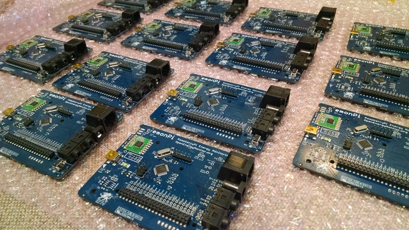
Re: emonPi Development Ideas
Hi Glyn,
Will you sell just the board and not the enclosure? In fact, do you sell the PCB and parts for self assembly? I need something low cost.
[Duplicate post deleted - Moderator (RW)]
Re: emonPi Development Ideas
1. Have you looked at the shop website?
2. I understand that kits are generally no longer available due to the high labour cost of picking and packing the parts.
Re: emonPi Development Ideas
Yes I did look on the online Shop, but didn't find the just the emonPi board (loaded or unloaded) - please let me know if you do however, I might have missed it.
I guess part of the problem is I already have a Rpi B+ and would like to try out the emonPi board on it, but not necessarily wanting to commit to another RPi B+, and case etc.
Re: emonPi Development Ideas
You didn't say that to begin with. I suggest you email the shop, as G&T don't check the forums all that often. They might well be prepared to sell you the emonPi board on its own.
Your fallback is an uncased emonTx without radio, with a serial connection to your Pi.
Re: emonPi Development Ideas
Yes, we do sell the emonPi populated PCB on it's own, just select 'assembled PCB only no enclosure' option in the emonPi options: http://shop.openenergymonitor.com/emonpi-1/
Re: emonPi Development Ideas
Thanks Robert, and thanks Glyn. I can see it now :)